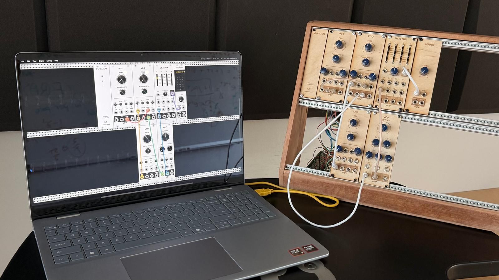
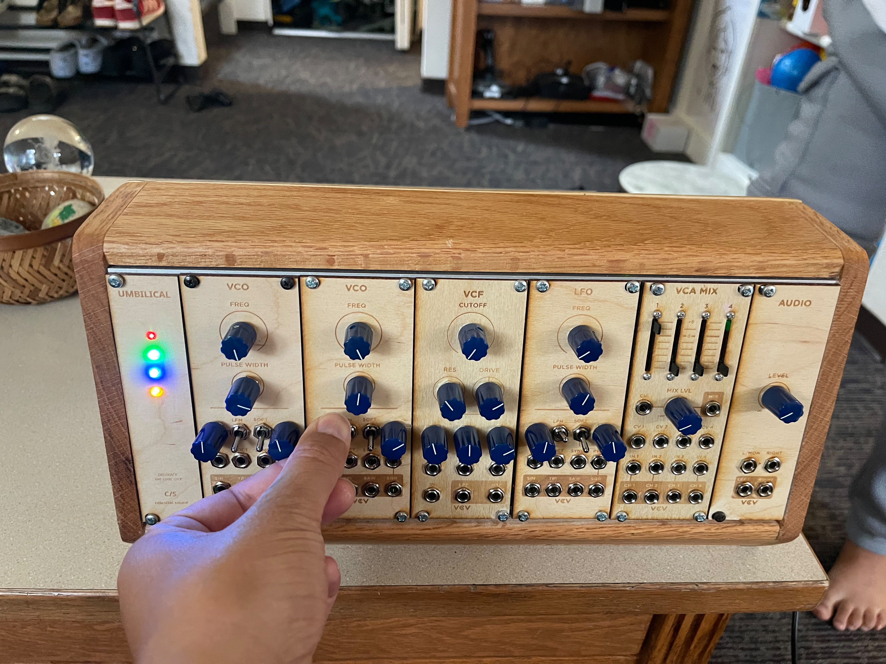
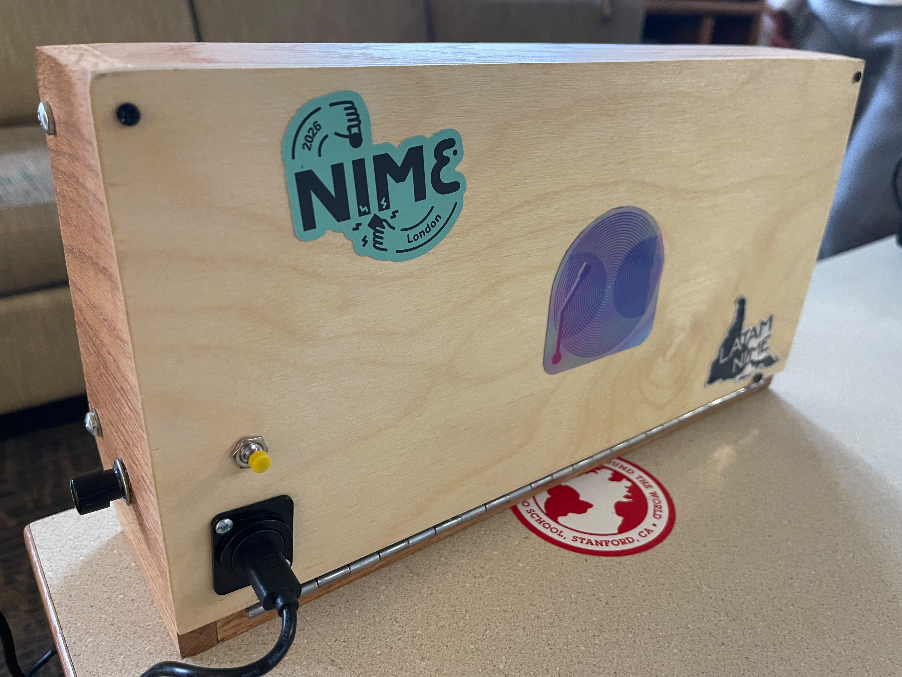
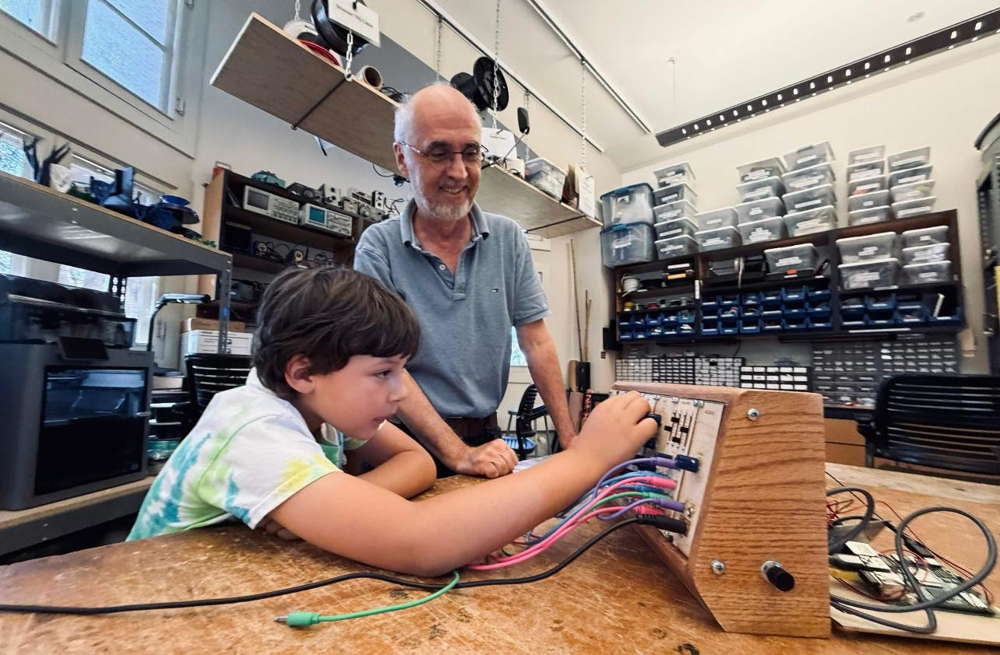

Umbilical
An experimental New Interface for Musical Expression (NIME) that explores the relationship
between performer and instrument through a cord-based haptic connection.
Read the NIME 2026 paper

Umbilical — front view

Detail view

Back of the instrument

In performance